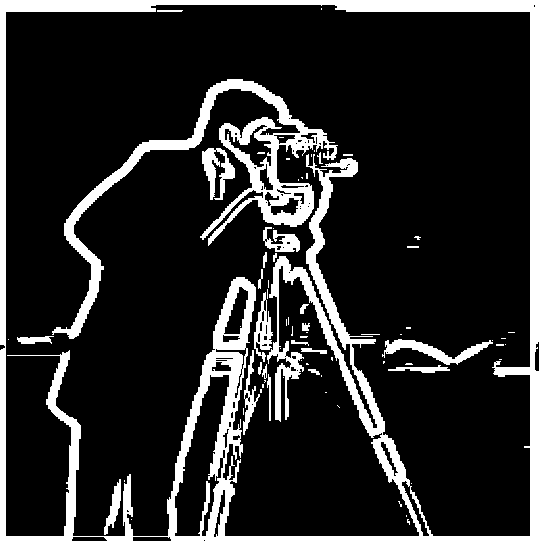
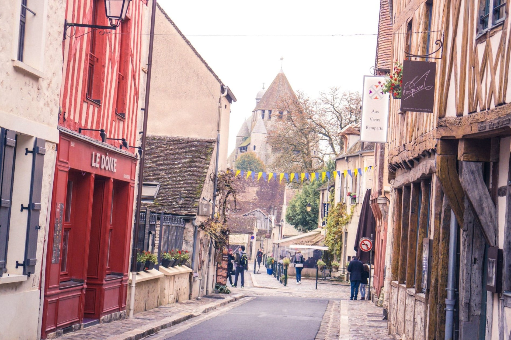
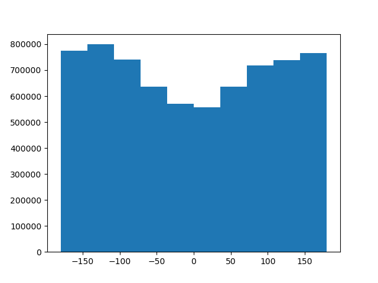

Fun with Filters and Frequencies
CS 194-26: Intro to Computer Vision and Computational Photography
Gregory Du, CS194-26-aec
Overview
This project explores the way in which we can process images using various filters. We examine the variety
of frequencies found in images, and see examples of how considering subsets can lead to some really interesting
results.
Filters
1.1: Finite Difference Operators
The computation for the gradient magnitude image is actually quite simple. First we convolve the image with
the finite difference operator in the x dimension, [1, -1], then we convolve the image with
the finite difference operator in the y dimension, [[1], [-1]]. With these partial derivative
intermediate steps (which we can call p_dx and p_dy respectively), we simply need
to utilize the distance formula on these two images on a per-pixel basis, that is to say, the gradient
magnitude image can be computed as follows: np.sqrt(p_dx**2 + p_dy**2).
|
Camera Man: Partial Derivative w.r.t x
|
Camera Man: Partial Derivative w.r.t y
|
|
Camera Man: Gradient Magnitude
|
Camera Man: Gradient Magnitude Binarized
|
1.2: Derivative of Gaussian Filter
By first applying the gaussian filter, we can see that in fact, we've removed a lot of the graininess from
our original gradient magnitude image. By blurring the image first, we've essentially prevented outlier
bright points from passing our derivative filter and threshold checks, since they now blend in much more
with their surroundings, considering they aren't actually edges, and thus the intensities of the pixels
that surround them are less likely to be different as they would be for an edge. We can also see that the
edges are not quite as sharp, which stands to reason as well, simply because we've blurred the edges, thus
by blending edge pixels with the pixels around them, we've increased the border width of pixels our derivative
filter would pick up as an edge.
|
Camera Man: Partial Derivative w.r.t x
|
Camera Man: Partial Derivative w.r.t y
|
|
Camera Man: Gradient Magnitude
|

Camera Man: Gradient Magnitude Binarized
|
For some odd reason though, precomposing my gaussian and discrete difference filters yielded some odd, and blatantly incorrect results.
convolve2d is supposed to be 2D convolution which is commutative, however,
practically, the arguments are locked in order. I displayed my preconvolved filters below, and the final convolution.
|
Gaussian Preconvolved Dx
|
Gaussian Preconvolved Dy
|
Final Convolution
|
1.3: Image Straightening
We use a proposed rotation range from -5 to 5 degrees. This isn't a huge range, nor is it particularly granular
and we assume that the initial image is not completely tilted beyond reason (this will result in some failure
cases we will see below). The reasoning behind this choice is purely performance driven. We'd like to keep
computation times down, so we've reduced the proposed range of rotations to check. Below from left to right,
we will see the original image, the straightened image, as well as the angle histograms for the source and straightened
image.
Facade
|
facade
|
facade original angle histogram
|
facade straightened
|
facade straightened angle histogram
|
Drawn City
|
drawn city
|
drawn city original angle histogram
|
drawn city straightened
|
drawn city straightened angle histogram
|
France
|

france
|
france original angle histogram
|
france straightened
|
france straightened angle histogram
|
Flan
|
flan
|

flan original angle histogram
|
flan straightened
|
 flan straightened angle histogram
flan straightened angle histogram
|
In fact not all images were created equal, and thus image straightening does not work equally well on all images.
It worked pretty decently well on the first three, although you will notice that these are all architectural, or
city-scapes. The third image is of a flan, which although delicious looking, is not particularly amenable to
image straightening. There are two major reasons. First the image was rotated 9 degrees, which is farther
than the proposed range of rotations our algorithm will seek. More fundamentally however, this image has
a noticeable lack of straight lines. Based on the original image, it's almost completely impossible to tell
that it was rotated at all, simply because there isn't really a well defined notion of what a straightened
circular dessert should even be. This will happen with organic objects pretty easily since there aren't a ton
of lines for our algorithm to latch onto.
Frequencies
2.1: Image "Sharpening"
We've implemented the unsharp mask filter below, both naively, as well as through efficient filter pre-composition. I've included some
examples of some images that are sharpened, however you may notice that the last image, isn't really sharper, it's
just a little brighter. This is a consequence of the pseudo-sharpening we're using. We're only augmenting the weight of high
frequency signals in the original image, not a genuine sharpening of the image, so in a drawn image, where there isn't the blurry
grain of traditional photographs, and the resolution is unbounded, the unsharp mask filter basically just brightens the image
by additively increasing pixel brightness.
Taj Mahal
|
Taj Mahal
|
Taj Mahal: Sharpened Naively
|
Taj Mahal: Sharpened Pre-composed
|
Cherry Blossoms
|
Cherry Blossoms
|
Cherry Blossoms: Sharpened Naively
|
Cherry Blossoms: Sharpened Pre-composed
|
Woods
|
Woods
|
Woods: Sharpened Naively
|
Woods: Sharpened Pre-composed
|
Drawn
 Drawn
Drawn
|
Drawn: Sharpened Naively
|
Drawn: Sharpened Pre-composed
|
2.1: Hybrid Images
By artificially lerping between select frequencies from two different images, we can generate hybrids, images that
will transform as a function of viewing distance.
Let's take a look at our original two images, and their Fourier analyses:
|
Eiffel Tower
|
Eiffel Tower: Fourier Analysis
|
|
Washington Monument
|
Washington Monument: Fourier Analysis
|
Now what happens if we high pass filter the Eiffel Tower, and low pass filter the Washington Monument? Let's take a look
at their Fourier Analyses now:
|
Eiffel Tower: High Pass Filtered
|
Washington Monument: Low Pass Filtered
|
Let's now average the filtered versions of the Eiffel Tower and Washington Monument to get the Eiffel Monument!
|
Eiffel Monument
|
Eiffel Monument: Fourier Analysis
|
Here are two more cool hybrids that we generated. You may recognize the movie stars from Roman Holiday:
|
Derek
|
 Nutmeg
Nutmeg
|
Derek & Nutmeg
|
 Audrey Hepburn
Audrey Hepburn
|
Gregory Peck
|
Roman Holiday
|
This doesn't mean you should just go around making hybrid images of random source subjects though, if they don't align naturally,
they hybrid photo won't be that good. Take a look at this pumpkin-penguin for example. How would you even go about aligning this?
It's not that the effect doesn't work, it's just that the alignment isn't really meaningful. Perhaps another day for the punguin.
 Penguin
Penguin
|
 Pumpkin
Pumpkin
|
Punguin
|
2.3: Gaussian and Laplacian Pyramids
Let's take a look at some Gaussian and Laplacian stacks, first applied to the Mona Lisa:
Now let's see the Laplacian and Gaussian stack for the Eiffel Monument hybrid we generated above.
2.4: Multiresolution Blending
By employing the Laplacian and Gaussian stacks we generated above, we can synthesize some really interesting
multiresolution blending images. Below, we'll display the two original images, as well as the result of applying
multiresolution blending with standard masks.
Orapple
|
Apple
|
Orange
|
Orapple: Vertical Mask
|
Puffguin
|
Penguin
|
Puffin
|
 Puffguin: Horizontal Mask
Puffguin: Horizontal Mask
|
For this next image, we generated a custom fit irregular mask for the cactus. Employing multiresolution
blending allows us to spruce up a nice desert scene by adding a cactus.
|
Desert
|
Cactus
|
|
Desert Cactus Mask
|
Desert Cactus: Custom Mask
|
Here's the ladder of images that were lerped together:
Citations